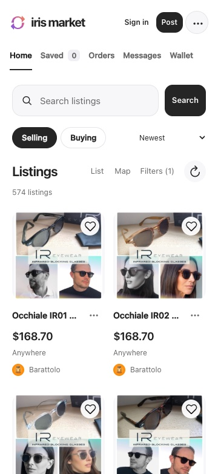
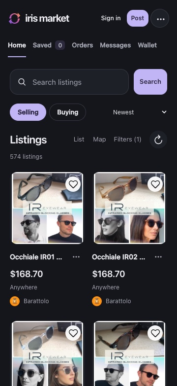

Iris Market
Find goods and services, or post what you’re offering or looking for.
No sign-up needed to browse. To post, just pick a name — no email or password.


What you can do
Listings
Browse offers and requests as a list, photo grid or map.
Search
Search by keyword, or describe what you want and let AI on your device find it.
Messages
Chat privately with sellers in encrypted messages.
Pickup and delivery
Agree on pickup, book a courier or request a ride.
Bitcoin offers
Search “bitcoin” to find people buying or selling it.
Wallet
Send and receive bitcoin with the built-in Cashu wallet.
Escrow
Let someone you both trust settle a trade. Two of you must agree.
Private matching
Keep an offer or request off the public market. A helper you trust finds matches, and the other person sees only a summary until you both choose to connect.
Command line
Search listings, post offers and requests, and read messages from the terminal. Try it offline with sample data, or connect an AI assistant through MCP.
CLI and MCP reference ↗Windows CLI requires the Microsoft Visual C++ x64 runtime.
cargo install iris-market --version 0.1.4 --locked iris-market --help iris-market tools iris-market preview ./preview-data